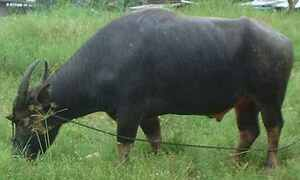
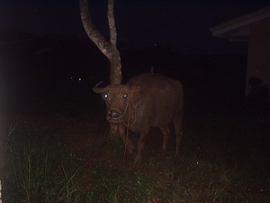

kalabew  
/kalabɔw/
n.
“water_buffalo”
n.
Bubalus_bubalis
carabao or water buffalo
Kenè kew egparani te sika ne kalabew su egpanungey sika ne kalabew.
Wrd.Gloss: water_buffalo
cf. nati —calf
cf. ayam —domestic animal
Cult. The támaráw is a wild species found especially in the highlands of Mindoro.
Eng. carabao; water buffalo; buffalo
Tag. kalabáw; damúlag
Ceb. kalabaw; kábaw
Ilo.: nuáng
Binukid: kalabaw
Cotabato Manobo: kalabaw
WBM: keravew
Ilianen: keravew
Tigwanon: kalabew
Sarangani: kelabaw
Dibabawon: kalabaw/kabaw
Cagayano: kałabaw
Kinamigin: kaabaw
Tagbawa: karabo
Obo: kaabew
Proto: karabaw
OCM: Fauna (136), Domesticated Animals (231)
DDP: Hoofed animals (1.6.1.1.3)
Online dict status: -
Usage level: M
vi.
for someone (egkekalabew, migkekalabew/ingkekalabew, kekalabew, agent, eg><ø-rdpCV-) to keep domestic water buffalos
Online dict status: -
Usage level: M
Updated by: RJH,AAA,QDL,NJK,RAA
Last updated: 16/Nov/2009
"kalabew" in reader "Nekey-a ka dakel?"
"kalabew" in text "Datu Gawilan Rebels against the Government"
"kalabew" in text "Dreaming of being Rich"
"kalabew" in text "Two carabaos fighting"
"kalabew" in text "Two carabaos fighting"
"kalabew" in text "Two carabaos fighting"
"kalabew" in text "Aurelio's Marriage"
"kalabew" in text "Aurelio's Marriage"
"kalabew" in text "Childbirth"
"kalabew" in text "Proving Innocence II (When Accused of Adultery)"
"kalabew" in text "Death of a Young Man"
This page last updated: 19/May/2012
Copyright © 2009-2010, Matigsalug Language Christian Association, Inc